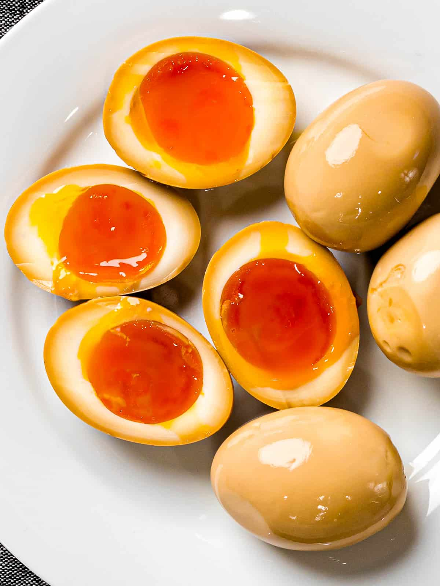

Ramen Egg Recipe

Ramen eggs are a great addition to any asian dish or enjoyed on their own.
While easy to make this dish is hard to master but your patience will be rewarded
Ingredients
- Four large eggs
- 2 oz soy sauce
- 2 oz mirin
- 2 oz sake
- 1 tsp white sugar
- Ice for water bath
Directions
- Mix the soy sauce, mirin, sake and sugar together in a pot and bring to a boil
- Once boiling turn down heat to simmer for one minute
- Set aside to cool
- Bring a pot of water to a full roiling boil
- Add eggs to boiling water
- Turn down heat slightly to maintain slow boil as to not toss around eggs
- Boil eggs for 7 1/2 to 8 minutes from time first egg is added
- Make an ice bath to shock eggs
- Once time is up add eggs to the ice bath for 15 minutes
- Carefully peel eggs and add to ziplock bag with cooled sauce mixture
- Let eggs marinate for several hours or preferably overnight
- Slice egg in half and enjoy